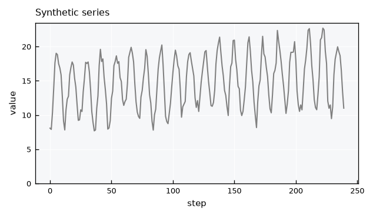
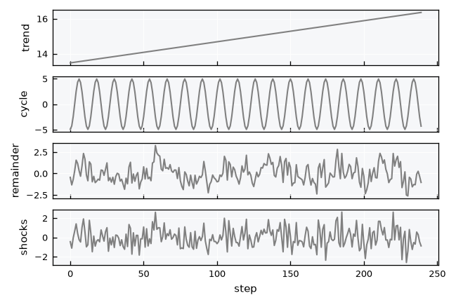
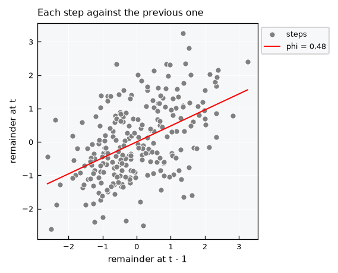
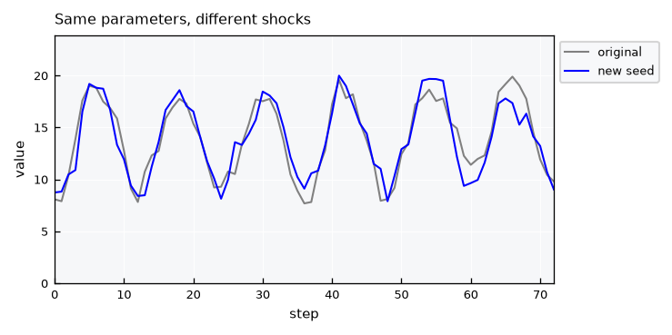
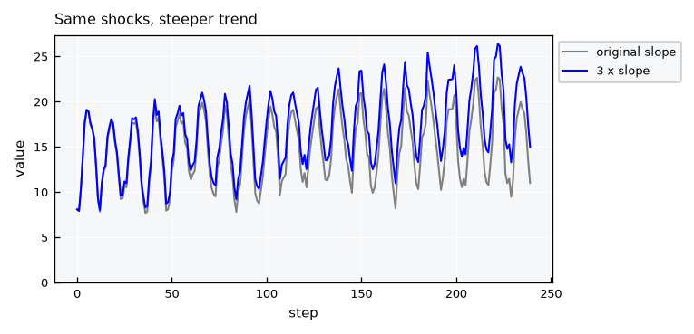
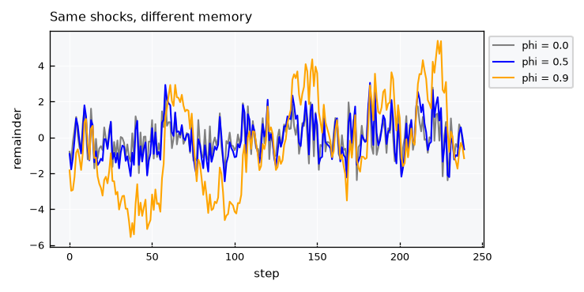
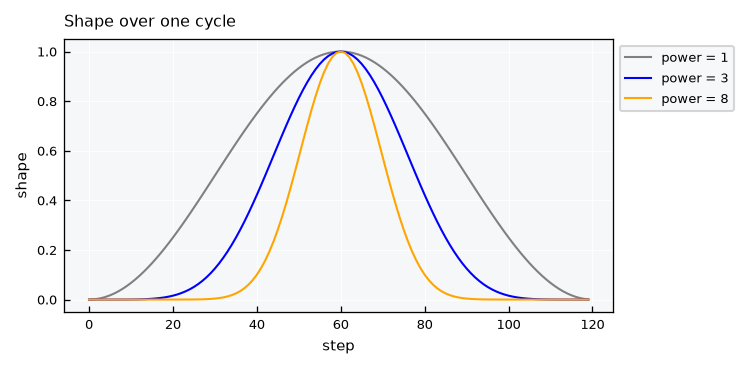
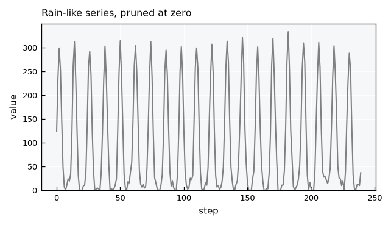

Stochastic series - AR(1) generator#
This tutorial shows the plans.stochastic functions that make and fit synthetic series. They work on plain numpy arrays and a period (steps per cycle), so there are no dates and no units involved.
A series is a linear trend, a cycle and a remainder, which holds the memory and the shocks:
The shape of the cycle \(g_t\) is a raised cosine to a power \(k\), and \(m_k\) is its average over a cycle.
Notebook setup#
For users running this tutorial as a Jupyter Notebook, this cell must be executed first:
import sys
import numpy as np
import matplotlib.pyplot as plt
# Install `plans` in `google.colab`.
# Use `pip install plans` for other environments.
if "google.colab" in sys.modules:
import os
os.system(f"{sys.executable} -m pip install -q plans")
# This avoids warnings related to uninstalled fonts
import logging
# Set the matplotlib font manager logger to only show errors (hides warnings)
logging.getLogger('matplotlib.font_manager').setLevel(logging.ERROR)
from plans import viewer
from plans.stochastic import (
make_params,
build,
fit_params,
decompose,
describe,
get_floor,
cycle_shape,
)
# Same style and figure sizes of the plans figures
viewer.set_style(style="wien")
plt.rcParams["figure.dpi"] = viewer.FIG_DPI
plt.rcParams["axes.titlelocation"] = "left"
def inches(size):
return viewer.FIG_SIZES[size]["w"] / 25.4, viewer.FIG_SIZES[size]["h"] / 25.4
GRAY, BLUE, ORANGE, RED = "gray", "blue", "orange", "red"
LEGEND = {"loc": "upper left", "bbox_to_anchor": (1, 1)}
Make the parameters#
make_params() takes what you know and converts it to a small dictionary of numbers. Here is a temperature-like monthly series over 20 years, given by its average, its change per cycle and its coldest and warmest points. The cycle peaks at step 6 of each cycle:
n = 240
truth = make_params(
period=12,
average=15,
n=n,
cycle_change=0.1,
baseline=10,
topline=20,
phase=6,
phi=0.5,
sigma=1,
)
truth
{'start': 14.004166666666666,
'slope': 0.008333333333333333,
'amplitude': 10.0,
'period': 12,
'phase': 6.0,
'power': 1.0,
'phi': 0.5,
'sigma': 1.0}
describe() prints every view of the same model, so you can read it in the form you know:
print(describe(params=truth, n=n))
start 14.0042
slope per step 0.00833333
slope per cycle 0.1
trend end (n=240) 15.9958
trend average (n=240) 15
amplitude 10
baseline (at trend average) 10
topline (at trend average) 20
period 12
phase 6
power 1
phi 0.5
sigma 1
floor (n=240) 9.00417
Build a series#
build() makes a series from the parameters. The seed makes it reproducible:
x = build(params=truth, n=n, seed=5)
fig, ax = plt.subplots(figsize=inches("M2"))
ax.plot(x, color=GRAY)
ax.set(title="Synthetic series", xlabel="step", ylabel="value", ylim=(0, None))
plt.show()

Fit the parameters#
fit_params() goes the other way, from data to parameters. The series was made from known values, so we can compare them. Only period is an input, because it is never estimated:
fit = fit_params(x=x, period=12)
for key in ["start", "slope", "amplitude", "phase", "power", "phi", "sigma"]:
print(f"{key:<10} true {truth[key]:8.4f} fit {fit[key]:8.4f}")
start true 14.0042 fit 13.4739
slope true 0.0083 fit 0.0121
amplitude true 10.0000 fit 9.8947
phase true 6.0000 fit 5.9786
power true 1.0000 fit 1.0000
phi true 0.5000 fit 0.4784
sigma true 1.0000 fit 0.9771
A single series carries sampling error, and phi is usually the most affected. Repeating the fit over many seeds shows the spread for this series length:
phis = [fit_params(x=build(params=truth, n=n, seed=s), period=12)["phi"] for s in range(50)]
print(f"phi: true {truth['phi']:.3f}, fitted {np.mean(phis):.3f} +- {np.std(phis):.3f}")
phi: true 0.500, fitted 0.476 +- 0.057
Decompose a series#
decompose() splits the series into its components, given the parameters. The remainder keeps the memory, while the shocks are what is left after removing it:
parts = decompose(x=x, params=fit)
fig, axes = plt.subplots(nrows=4, sharex=True, figsize=inches("M"))
for ax, name in zip(axes, ["trend", "cycle", "remainder", "shocks"]):
ax.plot(parts[name], color=GRAY)
ax.set_ylabel(name)
axes[-1].set_xlabel("step")
plt.show()

The shocks rebuild the original series exactly, so nothing is lost in the decomposition:
rebuilt = build(params=fit, n=n, shocks=parts["shocks"])
np.allclose(rebuilt, x)
True
Autoregression#
The memory is a relation between each step of the remainder and the step before it. Plotting one against the other shows it directly, and phi is the slope of the line through the origin:
r = parts["remainder"]
fig, ax = plt.subplots(figsize=inches("S"))
ax.scatter(r[:-1], r[1:], s=20, color=GRAY, edgecolor="white", linewidth=0.5, label="steps")
line = np.array([r.min(), r.max()])
ax.plot(line, fit["phi"] * line, color=RED, label=f"phi = {fit['phi']:.2f}")
ax.set(title="Each step against the previous one", xlabel="remainder at t - 1", ylabel="remainder at t")
ax.legend(**LEGEND)
plt.show()

Draw a new series#
The same parameters with a new seed give a different series with the same behavior:
x_new = build(params=fit, n=n, seed=2)
fig, ax = plt.subplots(figsize=inches("M2"))
ax.plot(x, color=GRAY, label="original")
ax.plot(x_new, color=BLUE, label="new seed")
ax.set(title="Same parameters, different shocks", xlabel="step", ylabel="value", xlim=(0, 72), ylim=(0, None))
ax.legend(**LEGEND)
plt.show()

Change one parameter#
To isolate the effect of a parameter, change it and build again with the same seed. Both series use the same random numbers, so the only difference is the parameter. A steeper trend adds a straight line to the same shocks:
steeper = dict(truth, slope=3 * truth["slope"])
fig, ax = plt.subplots(figsize=inches("M2"))
ax.plot(build(params=truth, n=n, seed=5), color=GRAY, label="original slope")
ax.plot(build(params=steeper, n=n, seed=5), color=BLUE, label="3 x slope")
ax.set(title="Same shocks, steeper trend", xlabel="step", ylabel="value", ylim=(0, None))
ax.legend(**LEGEND)
plt.show()

Memory is easier to see in the remainder. With a high phi, the remainder wanders away from zero and takes longer to return:
fig, ax = plt.subplots(figsize=inches("M2"))
for phi, color in [(0.0, GRAY), (0.5, BLUE), (0.9, ORANGE)]:
params = dict(truth, phi=phi)
y = build(params=params, n=n, seed=5)
ax.plot(decompose(x=y, params=params)["remainder"], color=color, label=f"phi = {phi}")
ax.set(title="Same shocks, different memory", xlabel="step", ylabel="remainder")
ax.legend(**LEGEND)
plt.show()

Shape of the cycle#
power sets the shape of the cycle. A value of 1 is a plain cosine, and larger values give a sharper peak with a flat bottom:
fig, ax = plt.subplots(figsize=inches("M2"))
for power, color in [(1, GRAY), (3, BLUE), (8, ORANGE)]:
ax.plot(cycle_shape(n=120, period=120, phase=60, power=power), color=color, label=f"power = {power}")
ax.set(title="Shape over one cycle", xlabel="step", ylabel="shape")
ax.legend(**LEGEND)
plt.show()

Limitation: positive variables#
A sharp cycle looks like rainfall, and its trend plus cycle can stay above zero. The shocks, however, are is Gaussian and additive, so the series itself can still go below zero. Lets count those steps, and then prune them to zero:
rain = make_params(period=12, start=100, amplitude=300, phase=2, power=3, phi=0.3, sigma=10)
y = build(params=rain, n=n, seed=5)
y_pruned = np.clip(y, a_min=0, a_max=None)
print(f"lowest trend + cycle: {get_floor(params=rain, n=n):.2f}")
print(f"lowest value in series: {y.min():.2f}")
print(f"steps below zero: {100 * np.mean(y < 0):.1f} %")
print(f"mean before and after pruning: {y.mean():.2f}, {y_pruned.mean():.2f}")
fig, ax = plt.subplots(figsize=inches("M2"))
ax.plot(y_pruned, color=GRAY)
ax.set(title="Rain-like series, pruned at zero", xlabel="step", ylabel="value", ylim=(0, None))
plt.show()
lowest trend + cycle: 6.25
lowest value in series: -15.40
steps below zero: 11.7 %
mean before and after pruning: 99.39, 99.93

So this model suits variables like temperature better than rainfall or discharge. Pruning is a simple step to apply downstream, but it does not come from the model: it adds a small amount to the mean and piles values up at exactly zero.
Recap#
make_params()converts what you know into parameters, anddescribe()shows all views of them.build()makes a series, and the sameseedisolates the effect of changing one parameter.fit_params()estimates the parameters from a series without gaps, with at least 3 cycles of data.decompose()splits a series into trend, cycle, remainder and shocks.The shocks are additive and Gaussian, so a variable that must stay positive can still go below zero and needs pruning downstream.